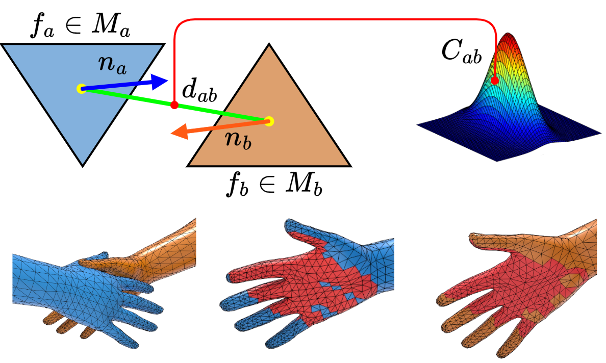

Two people stand side by side, one person grabs the other person's left hand with his/her right hand, and they spin in a circle.
Abstract
Generating realistic two-person interaction motions from text holds immense potential in computer vision and animations. While existing latent motion diffusion models offer compact and efficient representations, they are typically limited to a single canonical body shape and often fail to produce physically plausible contacts. As a result, the generated motion sequences exhibit substantial mesh penetrations and lack interaction realism. To address these limitations, we propose a contact and shape-aware latent motion representation and diffusion model (CoShMDM) for generating realistic two-person interactions from text. Our framework begins by constructing contact-compatible motion using SMPL-based meshes and a normal alignment-based mesh contact matrix to capture fine-grained mesh-level contacts. To account for shape diversity, we incorporate SMPL shape parameters and iteratively learn contact dynamics across different body shapes. Additionally, a reinforcement learning-based mesh penetration avoidance policy network, guided by signed distance fields, is introduced to minimize mesh penetrations while preserving contact fidelity and shape-aware motion. We further employ a dual-encoder VQ-VAE to learn disentangled latent representations for motion and contact, which are then utilized in a text- and body-shape-conditioned diffusion model. To ensure spatial, temporal, and semantic coherence, we integrate a novel contact and motion consistency module into the diffusion transformer. Extensive evaluations on the InterHuman and InterX datasets demonstrate that our method outperforms state-of-the-art approaches, achieving 19% and 17.3% lower mesh penetration and 17.8% and 33.2% higher contact similarity, respectively.
Proposed Method
(Hover the mouse over image to Zoom)

Overview of CoShMDM: (a) Contact and shape-aware latent motion representation, (b) Contact and shape-aware interaction motion diffusion model (CoShMDM).
Contact and Motion Consistency (CMC) Module
Visualization of Contact and Motion Consistency (CMC) Module. (Left) Mesh contact matrix encodes contact regions between interacting bodies. (Middle) A bipartite graph captures inter- and intra-skeletal relations. (Right) Features injected into the self-attention mechanism to enhance spatial and temporal coherence.
Qualitative Results on InterX Dataset (Rendering Engine = Open 3D Engine-O3DE)
Prompt: The first person extends his/her right hand over his/her head and waves at the second person, who then extends his/her right hand next to his/her head and waves back at the first person.
Prompt: Two people stand side by side, with one person holding the other person's left upper arm using his/her right hand, as they move forward together.
Prompt: The first person gently pushes the second person on his/her right shoulder from behind with his/her right hand, causing the second person to be pushed down to the ground.
Prompt: The first person softly pats the upper right part of the second person's back from behind using his/her right hand.
Prompt: Two people stand facing each other. The first person takes a few steps towards the second person and then knocks him/her over with his/her left shoulder.
Prompt: The first person sits down. The second person stands behind him and puts both hands on his shoulders, massaging them gently at first and then vigorously.
Prompt: One person sits on the ground while the other person approaches from the left, grabs the first person's left arm with both hands, and assists him/her in standing up.
Prompt: Two people stand facing each other, dancing by raising their right hands high and waving them from side to side in the air. The first person lowers his/her hand, and the second person follows suit.
Prompt: Both stand side by side, with their hands on their waists, jumping and alternating kicking their feet forward.
Prompt: One person stands, raises his/her right hand, and waves to the other person who sits opposite him/her. The person sitting raises both hands to wave back.
Prompt: Two people stand. One person holds out his/her left hand, while the other person holds out his/her right hand. They take turns guessing and then switch hands.
Prompt: One person stands while the other walks forward and covers his/her mouth with one hand, then the person raises his/her hand and pushes the other person's hand away.
Qualitative Results on InterHuman Dataset (Rendering Engine = Blender-Cycles)
Prompt: In an intense boxing match, one is continuously punching while the other is defending and counterattacking.
Prompt: Two humans stands straight and raise one arm while repeatedly exchanging greetings with each other.
Prompt: One person physically interacts with the other person by hitting and pushing, causing the other person to step backwards.
Results for various Shape Parameters βa and βb
Prompt: One person opens his/her arms, leans forward at the waist, hugs the other person, and lightly pats him/her twice with his/her right hand. Then, the other person embraces his/her waist.
Prompt: The first person pulls the second person's forearms forward with both hands while stepping back themselves, causing the second person to be pulled forward several steps while turning right.
Normal Alignment-Based Mesh Contacts
Mesh contact computed as normal alignment and centroid distance between face pairs, forming a contact matrix Ci.

Orientation Vectors and Interaction Features
Interaction features include orientation vectors (head, chest, mid-hip), proximity, and trajectories of the interacting meshes Ma and Mb.